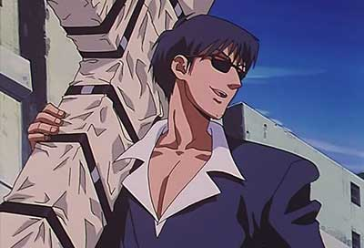
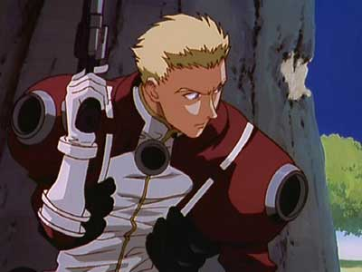

Vash the Stampede is the main character of the anime and manga series of Trigun created by Yasuhiro Nightow. He is a Plant, inter-dimensional beings that are tapped as a source of power and energy, and being so gives him superhuman powers and a capability to destroy cities, thus acquiring the name The Humanoid Typhoon due to the destruction & chaos which surrounds him, and subsequently The $$60,000,000,000.00 Man, because of the price on his head. He travels from town to town, keeping the peace and teaching townsfolk the value of it.

Meryl Stryfe and Milly Thompson are two agents of the Bernardelli Insurance Company, sent to evaluate claims regarding the Humanoid Typhoon. Initially, they dismiss the idea that the real Vash is the legendary Humanoid Typhoon (partially due to the lack of an introduction), but the two eventually learn (much to Meryl's dismay) that this is indeed the person they are assigned to track.

Nicholas D. Wolfwood A superb gunman, almost equal to Vash himself, and arguably the most skilled human being with a pistol in the series, Wolfwood is a priest who wields an enormous cross "to carry his sins", however, the cross contains a machine gun and a rack of automatic pistols. Wolfwood and Vash get into many conflicts over the morality of murder. According to Wolfwood's mentor "...we are sometimes driven to become the devil himself." Wolfwood is a tragic figure in that his redemption comes at a terrible cost.

Knives Millions The main antagonist, and Vash's brother. Like Vash, he is a sentient power plant created by humans but unlike him, he is a cruel mass murderer that intends to wipe out the entire human race, considering them unfit for this world. Most of the situations Vash ends up in are, in one way or another, connected to Knives.
Rem Saverem Vash's mentor and childhood friend, who taught him the value of life. It is mostly because of her that Vash is the hero he is. Vash constantly finds himself asking what Rem would do in his situation. When this happens, Vash enters a peaceful "dream world" where he asks her for help.

Gung-Ho Guns A group of superhuman assassins consisting of Monev the Gale, Dominique the Cyclops, E.G. Mine, Rai-Dei the Blade, Leonof the Puppet-Master, Gray the Ninelives, Hoppered the Gauntlet, Zazie the Beast, Midvalley the Hornfreak, Caine the Longshot (appears only in the anime version), Chapel (known as Chapel the Everegreen in the anime), and Elendira the Crimsonnail (appears only in the manga version). All members have extraordinary abilities and equipment. Their leader is Legato Bluesummers, a fanatical henchman of Knives who shares his nihilistic philosophy and possesses telepathic powers, who sends them out to attack Vash and cause him as much suffering as possible. The group's lineup differs slightly between the anime and manga versions of Trigun, with some characters appearing in one but not the other.